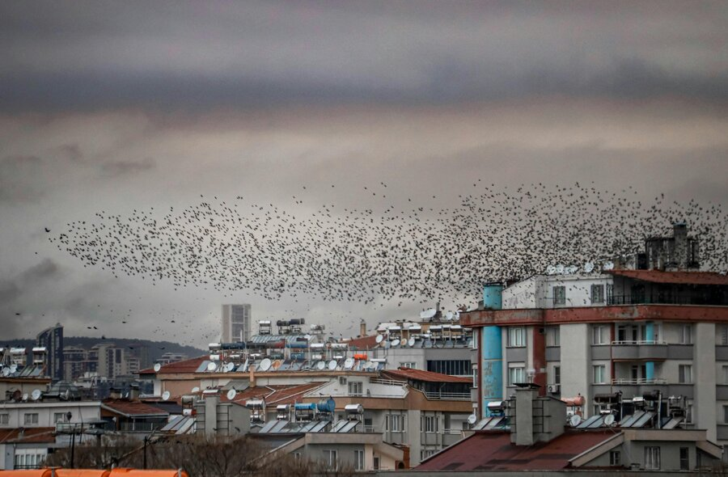

数学・論理
鳥の群れにリーダーはいない。魚の群れにも司令塔はいない。たった3つの単純なルールから、数千の個体が一糸乱れぬ動きを見せる。1987年、一人のコンピュータ科学者がそれを証明した。
クレイグ・レイノルズがACM SIGGRAPH '87で「Flocks, Herds, and Schools」を発表。
同年、レーガン大統領が「この壁を壊せ」と演説。ブラックマンデーでダウ平均が22.6%暴落。SN 1987Aが肉眼で観測された。
Boidsモデルは人工生命研究のなかで最も多く引用される事例のひとつとなった。映画・ロボット工学・交通シミュレーションにまで応用が広がっている。
夕暮れの空を見上げたことがあるだろうか。何百、何千もの鳥が、渦を巻くように飛んでいる。ひとつの巨大な生き物のように膨らみ、縮み、ねじれ、また広がる。その場にいた人なら、息を呑んだはずだ。
あの動きを見て、ほとんどの人は「リーダーがいるのだろう」と思う。先頭の鳥が合図を出し、残りがそれに従っている——と。直感的にはそうとしか思えない。秩序があるなら、指揮者がいるはずだ。
いない。指揮者は最初から存在しない。
この記事では、単純さから複雑さが生まれる瞬間を画面の中で体験する。動く群れを自分の手でつくり、秩序が勝手に生まれる感覚を掴む。
1930年代、イギリスの鳥類学者エドマンド・セロウスは、群れで飛ぶ鳥たちのあまりに完璧な同調を見て、こう結論づけた。テレパシーだ。鳥たちは思念で意思を伝え合い、飛行方向を共有しているのだ、と。冗談ではない。1931年に出版された彼の著書のタイトルは、文字通り『Thought-transference (or what?) in Birdsテレパシー仮説
エドマンド・セロウスが1931年に著した本のタイトル。群れの同調を超自然的な力で説明しようとした。当時は反応速度の計測技術がなく、この仮説を厳密に否定する手段がなかった。』だった。
"The motion of a flock of birds is one of nature's delights. It is made up of discrete birds yet overall motion seems fluid; it is simple in concept yet is so visually complex."
鳥の群れの動きは、自然がもたらす歓びのひとつだ。個々の鳥から成り立っているのに、全体の動きは流れるようで——概念としては単純なのに、視覚的にはこの上なく複雑だ。
— Craig Reynolds『Flocks, Herds, and Schools』（1987）
セロウスの直感は、方向が間違っていた。だが問い自体は正しかった。数千の個体がぶつかりもせず、遅れもせず、一斉に方向を変える——その同調は、どこから来ているのか。リーダーがいるなら、リーダーの判断が群れ全体に伝わるのに何秒かかるはずだ。だが実際に測定してみると、群れの方向転換は個体の反応時間の3倍の速さで伝播する。先頭からの命令が順番に伝わるモデルでは、この速度は説明できない。
答えは、まったく逆の方向にあった。群れの秩序は上から降りてくるのではなく、下から立ち上がる。各個体が自分のすぐ隣の仲間だけを見て、ごく単純なルールに従って動く。その結果として——誰も設計していないのに——全体に美しい秩序が現れる。これを創発創発（emergence）
個々の要素の振る舞いからは予測できない性質が、全体のレベルで新しく出現すること。蟻の巣、脳の意識、交通渋滞なども創発の例とされる。と呼ぶ。
クレイグ・レイノルズ
Craig W. Reynolds — コンピュータ科学者
MIT出身。1986年、シンボリクス社のグラフィックス部門に在籍中にBoidsモデルを開発。「高校時代からプログラミングを学ぶなかで、自然の群れの動きを手続き的にとらえるようになった」と語っている。1987年のSIGGRAPHで発表した論文は、人工生命と群知能の分野に決定的な影響を与えた。
✗ よくある誤解
群れにはリーダーがいて、他の個体はそのリーダーに従っている
✓ 実際は
リーダーは存在しない。各個体は近くの仲間だけを見て動き、全体の秩序は結果として生まれる
✗ よくある誤解
群れの動きを再現するには、複雑な数式やAIが必要
✓ 実際は
3つの単純なルール（分離・整列・結合）だけでリアルな群れの動きが生まれる
✗ よくある誤解
Boidsは純粋な理論モデルで、実用的な応用はない
✓ 実際は
映画のCG群衆シーン、自律ドローンの編隊飛行、交通流シミュレーションなど、幅広く応用されている
レイノルズが1986年に書いたBoidsBoids（ボイド）
「bird-oid object」——鳥っぽいもの、の略。ニューヨーク訛りで「bird」を「boid」と発音することにもかけている。レイノルズが群れシミュレーションの各個体につけた名前。プログラムの核心は、たった3つのルールだ。分離（Separation）——近づきすぎた仲間から離れる。整列（Alignment）——近くの仲間と同じ方向を向く。結合（Cohesion）——近くの仲間の中心に向かって寄る。それだけ。
このルールのどこにも「群れを作れ」とは書いていない。各個体は群れの全体像を知らない。自分の近くにいる仲間だけを見て、3つの力のバランスを取りながら動く。それだけで、画面上に群れが出現する。
言葉で読むのと、動くものを見るのとでは、理解の深さがまるで違う。下のシミュレーターで、まずプリセットボタンを切り替えてみてほしい。「群れ飛行」で秩序が見え、「分離だけ」で散り散りになり、「結合だけ」で団子になる。ルールを足したり引いたりするたびに、秩序が勝手に立ち上がったり崩壊したりする瞬間を確かめることに意味がある。
このシミュレーターで確認できること
三角形ひとつひとつが「ボイド」——群れの一員だ。各ボイドは自分の近くにいる仲間だけを見て、3つのルールに従って動いている。プリセットボタンを切り替えると、どのルールが群れのどんな性質を生み出しているかがわかる。スライダーで強さを細かく調整することもできる。
Reynolds（1987）の3ルールモデルに基づく概念的シミュレーション。パラメータは教育目的で誇張している。
"Perhaps most puzzling is the strong impression of intentional, centralized control. Yet all evidence indicates that flock motion must be merely the aggregate result of the actions of individual animals."
最も不思議なのは、意図的で中央集権的な統制があるかのような強い印象だ。しかしあらゆる証拠が示すのは、群れの動きは個々の動物の行動の集積にすぎないということである。
— Craig Reynolds『Flocks, Herds, and Schools』（1987）
3つのルールがそれぞれ別の力を生み出す。分離は個体同士の衝突を防ぎ、結合は群れがバラバラになるのを防ぐ。この2つだけだと、群れは固まるけれど方向がバラバラになる。整列がそこに加わることで、全体に一貫した流れが生まれる。3つの力が釣り合ったとき——そのとき初めて、群れは「群れらしく」動き始める。
創発が生まれる仕組み
レイノルズのモデルでは、各ボイドは一定の視野角と距離の範囲にいる仲間だけを認識する。群れの端にいるボイドは、反対側のボイドの存在を知らない。人間で言えば、満員電車の中で自分のすぐ周りの人だけを見ているようなもの。全体の混雑状況は見えていない。
各ボイドは毎フレーム、3つのルールから得られるベクトルを合成して自分の進行方向を決める。分離と結合は相反する力で、近すぎれば分離が勝ち、遠すぎれば結合が勝つ。レイノルズの原論文では分離が最も優先度が高い。ぶつかるのが一番まずいからだ。
ボイドAがボイドBに影響を受けて方向を変えると、その変化がボイドCに影響し、Cの変化がまたAに返ってくる。フィードバックの連鎖が非線形に絡み合うことで、個体の単純なルールからは予測できない複雑なパターンが生まれる。群れが障害物の手前で二手に分かれ、通過後にまた合流するのは、この非線形性の産物だ。
指揮者なしに秩序が生まれるのは、ローカルな判断の連鎖が全体に波及するからだ。各個体が「全体像」を持っていなくても、隣の仲間に正しく反応し続ければ、マクロな秩序は勝手に立ち上がる。
ここで注意しておきたいのは、このモデルが「現実の鳥の行動を完璧に再現している」と主張しているわけではないことだ。レイノルズ自身が論文のなかで認めているように、実際の鳥はもっと長距離の視覚情報も使っている。ムクドリの群れを観測した2012年の研究では、各個体は距離ではなく最も近い6〜7羽の仲間との相互作用で動いていることが示された。距離ではなくトポロジカルトポロジカル（topological）
ここでは「距離が何メートルか」ではなく「何番目に近いか」という順位関係で判断すること。群れの密度が変わっても、常に最寄りの6〜7羽だけを見るので、密集時も散開時も同じように機能する。な——つまり「何番目に近い仲間か」で判断するという、より洗練されたモデルだ。
だが重要なのは、レイノルズのモデルの核心——ローカルなルールの集積からグローバルな秩序が生まれる——は、その後の研究でも否定されていないということだ。むしろ補強されている。
赤い点は、群れの知能という考え方にとっての転換点を示す。
1931
セロウスの「テレパシー仮説」
イギリスの鳥類学者エドマンド・セロウスが『Thought-transference (or what?) in Birds』を出版。群れの同調を超自然的な力で説明しようとした最初期の記録。
1982
市起良一の先駆的モデル
日本の生物学者・市起良一（Ichiro Aoki）が、魚の群れの動きを数学的にモデル化した論文を発表。レイノルズのBoids論文に5年先行する。
1986
レイノルズがBoidsを開発
シンボリクス社のグラフィックス部門で、Lispを使って最初のBoidsプログラムを書く。「たった1〜2ヶ月で、群れらしい動きが出現した」とレイノルズは回想している。
1987
SIGGRAPH '87で論文発表
「Flocks, Herds, and Schools: A Distributed Behavioral Model」を発表。同年、デモフィルム『Stanley and Stella in: Breaking the Ice』をSIGGRAPH電子シアターで上映。人工生命の領域にも波及した。
1992
『バットマン リターンズ』で映画デビュー
ティム・バートン監督作品で、CGのコウモリの大群とペンギンの群れにBoidsアルゴリズムの改良版が使われた。映画産業でBoidsが使われた最初の事例。
1994
『ライオン・キング』のヌーの暴走
ディズニーのCGI部門が、Boidsの考え方を応用した「回避プログラム」で数千頭のヌーの暴走シーンを制作。5人のアニメーターが2年以上をかけた。
2012
トポロジカル相互作用の発見
ローマの研究グループが、実際のムクドリの群れでは距離ではなく「最も近い6〜7羽」との相互作用が支配的であることを示した。Boidsの基本原理を実データで精緻化した重要な研究。
Boidsモデルが突きつけたのは、ある根本的な問いだ。群れが見事な回避運動をするとき、そこに「知性」はあるのだろうか。各個体は隣の仲間を見ているだけだ。全体のパターンを把握している者は誰もいない。にもかかわらず、結果として現れる群れの動きは、あたかも一つの知性が全体を操縦しているかのように見える。
これは鳥の話だけではない。蟻の巣を考えてほしい。女王蟻は兵隊蟻に命令を出していない。各個体がフェロモンフェロモン
昆虫などが体外に分泌する化学物質。蟻の場合、餌を見つけた個体がフェロモンの道を残し、他の蟻がそれを辿ることで効率的な餌探しが実現する。誰かが全体を設計したわけではない。という化学物質の痕跡に反応して行動しているだけだ。それでも蟻の巣は、最短経路の発見、温度調節、死体の運搬といった高度な「問題解決」を実現している。交通渋滞の波もそうだ。ドライバーの一人ひとりは前の車の速度に反応しているだけで、渋滞を「作ろう」としている人は誰もいない。

街の上空を覆う鳥の群れ。数千羽が一糸乱れぬ飛行を見せるが、指揮者はどこにもいない
私たちは「秩序があるなら設計者がいるはずだ」と考えがちだ。これは人間の認知に深く埋め込まれた傾向で、心理学では目的論的思考目的論的思考（teleological thinking）
物事に目的や意図があると考える思考の傾向。「雲は雨を降らすためにある」のような考え方。人間は幼少期からこの傾向を持ち、秩序のある現象を見ると「誰かがそう設計した」と直感的に判断しやすい。と呼ばれる。川の流れを見て「水が海に行こうとしている」と感じるのと同じ構造だ。
だがBoidsが示したのは、まさにその直感の裏側だった。設計者なしに設計が生まれる。 目的なしに目的があるように見える振る舞いが生まれる。しかも、それは例外的な現象ではない。蟻の巣、脳のニューロン、都市の交通、経済市場——私たちが「知的だ」と感じるシステムの多くは、ローカルなルールの集積から立ち上がっている。
いや、こうまとめると、きれいすぎるかもしれない。「単純なルールで全部説明できる」という話ではない。Boidsモデルは群れの動きの多くを再現するが、すべてではない。実際のムクドリの群れは、Boidsでは説明できない急激な方向転換やカスケード反応を見せることがある。2012年のローマ大学の研究が示したトポロジカルな相互作用は、距離ベースのBoidsモデルでは捉えきれない性質だった。
でも——それでも、だ。「指揮者なしに秩序が生まれる」という発見は揺るがない。私たちがここから持ち帰るべきなのは、「全能の説明」ではなく、ひとつの視点の転換だ。秩序を見たとき、「誰がこれを作ったのか」ではなく、「何のルールがこれを生んだのか」と問いを変えること。答えは上にではなく、下に——個々の要素のあいだに——あるのかもしれない。
文化への登場
バットマン リターンズ（1992）
ティム・バートン監督。Boidsアルゴリズムの改良版が映画で初めて使用された作品。CGで生成されたコウモリの大群とペンギンの行進に、シンボリクス社で開発された元のBoidsソフトウェアの派生版が使われた。
ライオン・キング（1994）
ディズニーのCGI部門が2年以上かけて制作したヌーの暴走シーン。監督のロブ・ミンコフは「回避プログラムを発明しなければならなかった」と語っている。ヌー同士がぶつからず、個々に異なる動きをする仕組みは、Boidsの分離ルールと本質的に同じ原理だ。
Half-Life（1998）
Valve社のFPSゲーム。終盤に登場する飛行クリーチャーの動きにBoidsアルゴリズムが採用され、ゲームファイル上でも「boid」という名前で参照されている。
Flocks, Herds, and Schools: A Distributed Behavioral Model
すべてはこの論文から始まった。3つのルールの定義、優先順位の設計、障害物回避の拡張まで読める。アルゴリズムの説明は素朴に明快で、プログラミング経験がなくても追える。
Interaction ruling animal collective behavior depends on topological rather than metric distance
実際のムクドリの群れでは、距離ではなく「近い順の6〜7羽」で相互作用が起きていることを示した画期的な論文。Boidsモデルの前提を実データで検証・更新している。読むと「モデルと現実の距離」が体感できる。
レイノルズ自身が管理するBoidsの公式ページ。1987年以降の応用事例、関連研究、デモへのリンクが網羅されている。人工生命・群知能の文献リストとしても有用。
Out of Control: The New Biology of Machines, Social Systems and the Economic World — Chapter 2B
WIRED誌初代編集長が書いた創発と複雑系の名著。第2章Bのセクションでは、Boidsモデルを「制御なき秩序」の代表例として鮮やかに紹介している。科学とテクノロジーの交差点を楽しめる一冊。